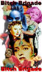 |
The Bitch Brigade
By Stu Kobak
|
They marched through Hollywood
armed with sharp tongues and poison dialogue. A select group of actresses filtered through the
star system over the decades to form The Bitch Brigade. These leading ladies born on the tidal wave
of the "talkies," played larger than life on the big screen with gleefully acid dialogue.
Barbara Stanwyck played tough more than any actress I
can remember. She was a survivor, a street fighter, a woman with great gams who might just kick you
in the face. Her tongue was sharp enough to hold her own in a back alley knife fight when she played in a tough little film called Night Nurse
(1933). That was just the
beginning for this actress tempered from hunger and desire and forged in Hollywood. She well might
be called the leader of The Bitch Brigade, a line of leading ladies that played it with a sharp
high-heeled goose step spiked by a savvy sexual edge. 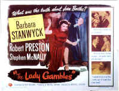
I for one never had a clue about Greta Garbo's supposed sexuality. Her
square shoulders and hard facial features combined with a determined strut to produce a woman
fueled by a charge of testosterone. In Ninotchka (1939), Garbo combined her masculine traits with
communism to create an office in The Bitch Brigade, comrade Lena Yakushova. It took a suave Melvin
Douglas to bend the iron Garbo backside. Garbo's first big success was opposite John Gilbert in
silent film The Flesh and the Devil (1927). The duo had a hot screen chemistry that
purportedly carried over after hours. The film was an enormous success and MGM couldn't wait to capitalize on
the new found allure of the actress. Garbo was even tough enough to stand up to MGM. When the
studio refused to accede to her demand for an unprecedented raise from $600 a week to $5000 a week,
the icy Swede hopped a boat back across the Atlantic to her home. It was almost a year before the
studio met her demands and she returned to the screen. Her first talkie film was Anna Christie (1930),
a dark love story adapted from a Eugene O'Neill play. When the actress barked out her first husky
dialogue of "Give me a whiskey," she was well on the road to bitchdom.
"Fasten your seat belts, kids, it's going
to be a bumpy ride."
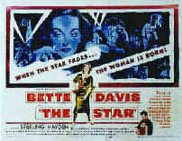 No mention of The Bitch Brigade can
pass without an honor guard for Bette Davis. Boy, could she burn you with style; she flicks harsh
syllables around in clipped flicks like the lash of leather whip. In The Little Foxes (1941), Davis
embodies the feminine bitch with slimy distinction. She just may get the title of the classiest
bitch ever to bust a leading man's balls. Leading husband Horace around by the jockstrap, Regina
Giddens fills her Southern household with poison. Herbert Marshall slinks around under the torrent
of bitch fury unleashed by Davis. Marshall, roaming the big southern mansion in a wheelchair, is a
perfect target for the snap of nasty Davis dialogue. In another life it would be easy to imagine
her pushing Marshall down the graceful flight of stairs just like Richard Widmark's Tommy Udo
dispatched an old women with remarkable glee in Kiss of Death (1947). Davis really wasn't a britches
bitch. In Jezebel (1938), she was adorned by lacy Southern gowns graceful enough to attract a
gaggle of male suitors. In All About Eve (1950), Davis played veteran movie bitch Margo
Channing. Man, can she slice steak with dialogue. But even the razor-tongued Davis has a new breed
of bitch to contend with in the saccharine sly Eve Harrington played with simpering charm by Ann
Baxter. Watch your backs baby.
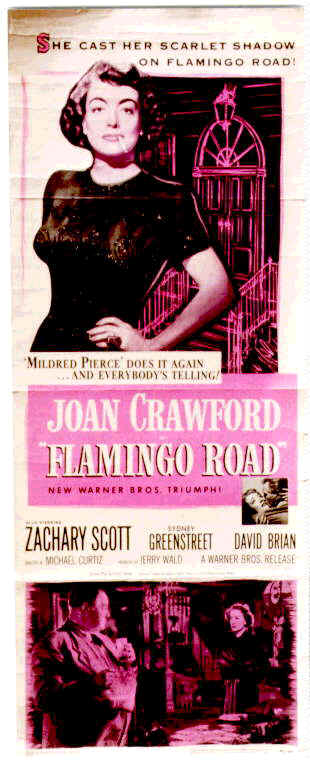 Hot on the heels of Bette Davis was opportunist bitch, Joan Crawford.
Echoing her own life, Crawford's characters were often social climbers willing to stop at nothing,
striding through the pile of human flesh relishing every six-inch stiletto step. Crawford's stare was enough to
break down half the leading men in Hollywood. She spit out her dialogue in imperious chunks with
hint of the wrong side of the tracks under her breath. The lithe body moved through her films
with snake-like deadly silence. As Crystal Allen in The Women (1939), Crawford
gleefully chops up marriages and husbands in whole chunks devouring them with vicious jaw
movements. In A Woman's Face (1941), disfigurement is her excuse for making lives miserable.
Crawford never had the range to illicit sympathy so her characters often appear bitchier.
Bimbo or Bitch
It might be too easy to draft Blonde Bimbo Jean Harlow
into The Bitch Brigade. Harlow could trade barbed dialogue with the best of them. She was tough,
hungry, sometimes ruthless, but underneath she was all women crying to surface and dominate any
hint of the bitch. If you had to muster up a Harlow image as bitch, she was definitely more bimbo than bitch.
In Blonde Bombshell (1933) she was the prima donna platinum movie star spinning publicist Lee Tracy
through the hoops, but Harlow never failed to have a sense of humor which undermined many of the
bitchy techniques to which her feisty screen characters might resort.
Marlene Dietrich may have been tough and heartless in many screen roles, but
underneath the stern exterior was often a softer, more womanly core. In The Blue Angel
(1930) she
stroked her mesh clad legs with long fingers to ignite the passion of hapless Emil Jannings. She
was a bitch to be sure, but with another man, Dietrich could drop her guard with feminine style. In
Morocco (1930), opposite Gary Cooper,
Dietrich contained her bitchiness cause Cooper couldn't cope with ice in his long slow drinks of
women.
Building a better bitch was a delicate balancing act. The bitch had to produce
box office bucks yet the screen persona was often so strong that it carried over into studio
squabbles. Davis was notorious for battling for independence at Warner. Crawford resorted to
adopting children to spread her vile abuse off-screen. Often, the bitch was featured in the
"women's" flicks. The strong vein of independence appealed to women still treated without
due respect by a male controlled society. The thirties through the fifties were the prime bitch
years. After the war, in the fifties, women began loosening the cuffs of domestic enslavement and
moved forward into the work place at an invigorated pace, leaving their need for the onscreen
expression of frustration, the bitch actress, behind. The bitch never really drove the guys into
movie theaters. They were tolerated in date movies, but guys wanted their screen sexuality
untempered by castrating commentary.
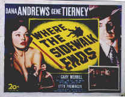 Not all the studios saw the need for a house bitch. MGM had Crawford
to fulfill the bulk of their bitch needs. Garbo added her deep voice and imposing stature to MGM's
own mini bitch brigade. Warner had Davis. Davis was the bitch times two and needed little
bolstering by minor back up bitches. Stanwyck stood in as Paramount's house bitch. When Fox
needed a bitch, they toyed with Gene Tierney briefly, but there was always the possibility of the
loan-a-bitch. And as the bitch era began to wane, studio house bitches no longer produced the
desired box office magic and began to float from studio to studio. Fox snared Bette Davis, finally
free of the Warner in her blood, for their greatest bitch movie All About Eve (1950). Dietrich
split her bitch duties between Paramount and Universal. MGM touted their own brand of bitch
with Lana Turner. The
beautiful bleached blonde turned men to jelly with an icy stare buoyed by pursed lips and proud
breasts. Turner's brassy Cora Smith tempted John Garfield into murder in The Postman Always
Rings Twice (1946). Trust me, Cora Smith didn't give a second thought to anybody but herself.
With Postman, MGM realized there were untapped qualities under Turner's tight sweaters and
unleashed her on Spencer Tracy in Cass Timberlane (1947). Tracy finished that film panting
for Katharine Hepburn.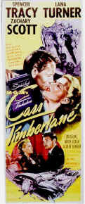 Turner is a wonderful dish
of a bitch in The Three Musketeers (1948). It's hard to root against her Countess de Winter.
The pinnacle of Turner's bitch work has got to be The Prodigal (1955). Turner plays high
priestess Samarra in ancient Damascus putting pure Edmund Purdom through the paces with some of the
ripest dialogue imaginable. Still, Turner looks so great in scanty clothing The Prodigal is
to pant for.
From Turner to Taylor
As Turner's bleached hair turned to
straw at the end of the fifties, raven hair beauty Elizabeth Taylor was ready to take her shot at
man-chewing. A remarkably beautiful
child star during the reign of bitch queens Davis, Crawford and Stanwyck in the forties, Taylor found her
edge in the late fifties maturing into the bitch mantle under MGM's banner. Belying the
beauty stuffed into tight-fitting bodices, Taylor changed into an instant ice queen That's right, there's ice in them thar boobs. Man, did she ever torment Paul Newman in Cat
on a Hot Tin Roof (1958). Well, maybe she did have reason to be less than satisfied with her self
pitying husband Brick, but did she have to step on them after she cut them off! In Who's Afraid
of Virginia Woolf (1966), 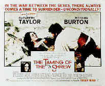 Taylor let the cat out of the bag full throttle, treating Richard Burton
with such disdain that she practically spits her lines out. "I'm loud and I'm vulgar and I
wear the pants in the house because somebody's got to, but I'm no monster." Monster, no, bitch
yes. What surprises me is how some of these screen bitches get away with it. In Woolf Taylor plays
it drunk and blowsy, a vile tongued version of her youthful beauty. She was rewarded with an
Academy Award© for Best Actress. Taylor,
married and remarried and remarried again to Richard Burton must have had a tempestuous marriage
and it's reflected in films like Taming of the Shrew (1967), with Taylor again doing bitch duty in the
guise of shrewdom.
There were some one bitch wonders that made indelibly bitchy impressions. The
all time child bitch has got to be Vivien Leigh. As Scarlett O'Hara in Gone with the Wind (1939) she took such child-like pride
in breaking men's hearts it was darn right shameless. Tara? Come on babe, it was just the bitch in
you taking over. Shame on you making a stand up guy like Clark Gable wet the ruffles on his shirt
with tears. How come you didn't rev up the bitch machine on Leslie Howard. I suppose you were
afraid that Ashley Wilkes, under that saintly and somewhat fey exterior was hiding a big time bitch
inside himself. Leigh makes The Bitch Brigade for Scarlett alone.
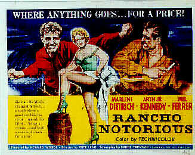 In their mature years, Crawford, Dietrich and Stanwyck all donned campy
Western
garb to play tough women gone even harder with age. In Johnny Guitar (1954), Crawford faces off
against Mercedes McCambridge, who even out overacts Crawford, but when the guns are pulled, it's
Crawford standing at the top of the stairs with smoke coming out of her nostrils. Barbara Stanwyck
had prior experience with guns playing firebrand Annie Oakley (1935) with proper sass early in her
career. A few years later in Union Pacific (1939) she was just a pair of pretty gams between the
gun-toting guys, but late in her career she played thoroughly tough in a number of Westerns like Cattle
Queen of Montana (1954), The Violent Men (1955), The Maverick Queen (1956) and Forty Guns
(1957). In Rancho
Notorious (1952), Marlene Dietrich combines mesh stockings with a holster and gun, playing a former
dance hall girl now a bandit. Better off meeting a rattlesnake with your pants down than Marlene
cooling off the barrel of a smoking gun.
Battle of the Bitches
|
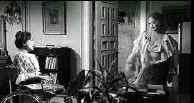
|
Davis vs. Crawford. ©MGM
|
Crawford and Davis saved some of their best bitching
for each other. Whatever Happened to Baby Jane (1962) allowed the actresses to bitch
together for the first time; they fought for screen time, for
camera position, and continued their battling in the press for years afterwards. Davis was
quoted as saying "The best time I ever had with Joan Crawford was when I pushed her down the
stairs in Whatever Happened to Baby Jane?" Was all the hubbub for publicity or did these two
actresses engender enough mutual acrimony to set gossip columnists atwitter? Only the set
hairdresser knows for sure.
Dorothy Malone won an Oscar© working on her drunken bitch style in Written on
the Wind (1956). As the Texas oil heiress she has an uncontrollable yen for Rock Hudson and she's darn
right pissed over her brother's relationship with him. Hmmm? Poor little bitch girl. Malone also managed to
drive
James Cagney to new contortions in Man of a Thousand Faces (1957). Playing silent screen
horror star Lon Chaney's first wife, she puts the chill in the movie. 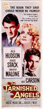 Amongst the one-bitch-wonders, Gene Tierney has to stand out. She
was a great bitch in Leave Her to Heaven (1945), but Tierney was so beautiful it drove audiences wild to
watch her cross over the line into bitchdom. On occasion, beauties like Susan Hayward cross
attach themselves to The Bitch Brigade. Hayward used her throaty pipes and puckered nose to
snipe at Frederic March in I Married a Witch (1942). At least March married the right girl,
otherwise the film might have been called I Married a Bitch. Hayward plays Messalina in Demetrius and the
Gladiators (1954), making Claudius's life miserable and proves too great for temptation for
upright Demetrius. She trades barbs with John Wayne's Genghis Khan in The Conqueror (1956), but Wayne is already
bristling from burrs under the saddle and sad Mongol mustache.
New Breed Bitches
Kathleen Turner managed to
sharpen her beautiful curves for a bitch foray in Body Heat (1981). Turner, in a
beautifully tailored white suit, plots the fall of William Hurt without the slightest hesitation.
With the sexual heat tantalizingly fresh, Turner turned her comic fangs on Steve Martin in The
Man with Two Brains (1983) In
the War of the Roses (1989), Turner switched to comic bitch mode, defying Michael Douglas at
every turn and even hanging from a chandelier to get the last word. Turner was clearly up to
the standards of classic Hollywood bitchdom.
Faye Dunaway scored big time points by portraying one of the ultimate bitches in
a merciless screen portrait. Her Joan Crawford in Mommie Dearest (1989) was an eerie
incarnation; crass, pathetic and cold. Dunaway could taunt a man with casual indifference. Even the early
Dunaway had the makings of bitch in Bonnie and Clyde (1967). After honing her icy bitch
arsenal, Faye worked the sharpened nails as a career women with a heart of stone in Network. Even
as Evelyn Mulray in Chinatown (1974) Dunaway had the makings of a bitch, but she was such damaged goods the ice was
submerged in the pain.
 Of the newest crop of actresses, few
have ascended the stairway to bitchdom. Perhaps Demi Moore could have marched shoulder to shoulder
in The Bitch Brigade of yesteryear. Demi certainly has showed a gift for cutting behavior in a
number of her films. What a bitch in Disclosure (1994), ready to use her body to As
Lieutenant Commander Joanne Galloway in A Few Good Men (1992), Demi would
love to let the bitch run free, but Tom Cruise is just too cute for Moore's internal cat to run
free. In the end, she's just another pussycat. She's tough as nails going toe to toe with the
boys in GI Jane (1997), but what real
bitch would resort to shaving her hair off and high kicking with karate style when the sharpened
claws of the true cinema bitch were available. Sharon Stone does the ice Queen bitch in gleeful screen
style. In Basic Instinct (1992) as Catherine Trammell her slutty rich girl throws bitch in every
direction. The scene in the police station when Trammell is interrogated positively paints an
original bitch portrait. Stone could be crowned the sex bitch. In Casino (1995) , she's the hooker who
know how to toy with her men and push them to the breaking point. Even in such a mild and amusing
flick as The Muse (1999), Stone ,manages to torture poor Albert Brooks with saccharine coated bitch
demands. Diabolique (1996) may have been nothing more than a rehash of superb French movie cuisine, but
Stone took great pride in her strutting bitchiness. Of the newest crop of actresses, few
have ascended the stairway to bitchdom. Perhaps Demi Moore could have marched shoulder to shoulder
in The Bitch Brigade of yesteryear. Demi certainly has showed a gift for cutting behavior in a
number of her films. What a bitch in Disclosure (1994), ready to use her body to As
Lieutenant Commander Joanne Galloway in A Few Good Men (1992), Demi would
love to let the bitch run free, but Tom Cruise is just too cute for Moore's internal cat to run
free. In the end, she's just another pussycat. She's tough as nails going toe to toe with the
boys in GI Jane (1997), but what real
bitch would resort to shaving her hair off and high kicking with karate style when the sharpened
claws of the true cinema bitch were available. Sharon Stone does the ice Queen bitch in gleeful screen
style. In Basic Instinct (1992) as Catherine Trammell her slutty rich girl throws bitch in every
direction. The scene in the police station when Trammell is interrogated positively paints an
original bitch portrait. Stone could be crowned the sex bitch. In Casino (1995) , she's the hooker who
know how to toy with her men and push them to the breaking point. Even in such a mild and amusing
flick as The Muse (1999), Stone ,manages to torture poor Albert Brooks with saccharine coated bitch
demands. Diabolique (1996) may have been nothing more than a rehash of superb French movie cuisine, but
Stone took great pride in her strutting bitchiness.
Qualities of a Bitch
You think it's easy to qualify for
The Bitch Brigade?
Think again. It takes a special kind of women to tip their words with venom. A Bitch Brigade
veteran could dangle a man on a rope from the edge of a cliff and cut the rope with one swift line
of dialogue. So long sucker, it's been good to use you. The best Bitch Brigade veterans could undermine a
man's masculinity with ingenious and ruthless use of their own sexuality. Bitch Brigade members
were experts at revenge. In Marked Woman (1937), Bette Davis hisses "I'll get even if I have
to crawl back from the grave to do it." The Bitch Brigade displays a unique distain for
more traditional members of their sex. "You noble wives and mothers bore the brains out of me.
And I'll bet you bore your husbands too!," is Joan Crawford's taunting challenge to Norma
Shearer in The Women (1939). When Crawford coldly states "Intelligent people don't marry for
better or worse. They marry for better and better," in 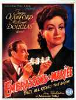 They All Kissed the Bride (1942), you
better believe she means what she says. Bitches brook no signs of weakness. In Queen Christina (1933),
Garbo haughtily responds to Lewis Stone's concern that she doesn't die an old maid. "I have no
intention to. I shall die a bachelor." Determination is a prime bitch quality. Barbara
Stanwyck knows a thing or two about it. In Double Indemnity (1944) she won't
let Fred McMurray backslide when he feels the hot breath of the law on his neck after the pair
knock off Stanwyck's husband for the insurance money. In Sorry, Wrong Number (1948), she won't
take no for an answer with a simple philosophy. "When I want something I fight for it and I
usually get." You bet your britches that these were bitches of the first order, classic
members of The Bitch Brigade.
|
|
|
|
|
Bitch DVD |
|
Bitches from Bette Davis to Barbara Stanwyck to
Sharon Stone can been seen slithering around on DVD. For info and links to reviews check out Bitch DVD. |

Selections from the Feature Archive
include articles on Akira Kurosawa, Frank
Darabont, Blonde Bimbos, Hollywood Street Gangs, or Vietnam: The
Hollywood Pariah, and many more....
.jpg)
Screen Voices and style of delivery often stamp an actor's screen
image indelibly. Click the lips to read more.

The major studio vaults are filled with incredible film treasures which
few have seen the light of DVD.
Open the Vaults

The
Movie Poster Archive includes extensive poster images from the films of stars like Susan Hayward,
Kirk Douglas, Katharine Hepburn and many more. Our featured star is Susan Hayward
Annie Get Your Gun/A,A-
Irving Berlin's brilliant musical gem is polished and preserved on this Warner DVD release. An
explosion of music, song, dance and color.

Click on the DVD MIA symbol for
profiles of DVDs missing in action.
Add films to the DVD MIA Master List by filling out
a simple form. Click Here

 Brad Lang continues to add more interesting material to the extensive
collection at Classic
Movies. Everything from actors and actress to your favorite directors is
linked at the site. Brad Lang continues to add more interesting material to the extensive
collection at Classic
Movies. Everything from actors and actress to your favorite directors is
linked at the site.
 Have you visited Home Theater
Talk lately? One of the friendliest places on the Net for Home Theater and DVD discussion, you
can get help for installation problems or simply share your opinions with other Vidiots. Have you visited Home Theater
Talk lately? One of the friendliest places on the Net for Home Theater and DVD discussion, you
can get help for installation problems or simply share your opinions with other Vidiots.

Looking for information about widescreen movies and hardware. The Widescreen Movie Center
is the place to go.

DVD news, reviews, forums: Jump right in!
 Gary Morris's insightful publication Bright Lights
Film Journal turns the celluloid in films from a unique perspective. Click on the image above
for more pure movie views. Gary Morris's insightful publication Bright Lights
Film Journal turns the celluloid in films from a unique perspective. Click on the image above
for more pure movie views.

DVD
Demystified makes it all clear. The official Internet DVD FAQ for the rec.video.dvd
Usenet newsgroups.

Comprehensive DVD review database. Easy to use
interface with specific region searches.

Terrific resource for learning about the ins and outs of movie
poster collecting.

ISF Monitor Calibrations in the
Tristate New York area. Lots of hardware info and frequent hardware peaks from video expert Kevin
Miller.They may be judgmental, but that's the point, isn't it. Lots of DVD reviews plus news and
more.

Films of the Golden Age is
a showcase for special feature articles on film
people and Hollywood history, all illustrated with beautiful photographs and classic movie art.

Classic Images on classic films, featuring news, reviews, obituaries, film convention reports,
and detailed articles on film people, from the most famous to the most obscure
Selections from the Feature Archive include articles on
Akira Kurosawa, Blonde Bimbos,
Frank
Darabont, Steven Culp,
John
Herzfeld or Vietnam: The
Hollywood Pariah, and many more....
Director Walks the Wire
Balanced by an armor of movie lore and filmmaking daring, director John Herzfeld is comfortable
walking the high wire. Check out this interview by Stu Kobak.
The
Movie Poster Archive includes extensive poster images from the films of stars like Susan Hayward,
Kirk Douglas, Katharine Hepburn and many more. Our featured star is Lana Turner.
Click on the DVD MIA symbol for
profiles of DVDs missing in action.
Add films to the DVD MIA Master List by filling out
a simple form. Click Here

Need a daily fix of movie
quotes. Reel Quotes Newsletter has the answer. Click on the Reel Quotes symbol for more.
|